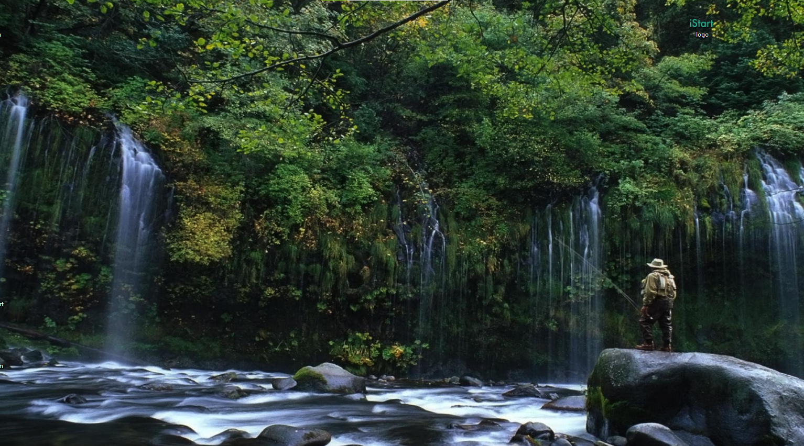

VOLUNTARY

Volunteers are concerned with wildlife conservation in order to safeguard wildlife species. A volunteer program that involves planting trees can be the perfect fit for you if you've been considering how you can contribute while also helping the environment.
CONTRIBUTION

We are aware that environmental issues like climate change and deforestation are a problem for our planet. People are rising to the occasion and acting. Around the world, environmentalists and people who enjoy the outdoors are working together to protect the environment.
COMMENTS
Planting trees improves peace and future hope as well as environmental conservation. It also maintains life. As the late, renowned environmentalist Prof. Wangari Maathai famously stated, "When we plant trees, we plant the seeds of peace and hope." Consequently, a tree serves as "a sign of hope for us.